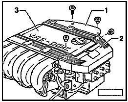
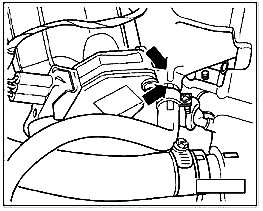

Valve Cover: Service and Repair
Cylinder Head Cover, Removing and Installing
Removing
- Disconnect Spark Plug connectors with ignition cables.
- Remove ignition cable guides -1- and -2-.

- Remove cover -3-.
- Disconnect Positive Crankcase Ventilation (PCV) Breather Valve from cylinder head cover.
- Disconnect hose (from PCV Breather to Evaporative Emission (EVAP) Canister Purge Regulator Valve -N80-) from upper intake manifold.
WARNING!:
On vehicles without Positive Crankcase Ventilation (PCV) Breather Valve, make especially sure that the EVAP Canister breather hose is installed correctly (danger of fire).
- Remove Intake Air duct from throttle valve housing.
- Separate connectors from Throttle Position (TP) Sensor -G69-, heater element, Idle Air Control (IAC) Valve -N71- and Intake Air Temperature (IAT) Sensor -G72-.
- Detach Accelerator Pedal cable from throttle valve housing and support bracket (do not remove locating clip).
- Disconnect coolant hose from throttle valve housing and seal (first release pressure from cooling system).
WARNING!:
First slowly release pressure from cooling system.
- Disconnect vacuum hoses from Fuel Pressure Regulator and vacuum brake booster.
- Unclip fuel lines from cylinder head cover.
- Detach dipstick guide tube from lower intake manifold.
- Remove upper intake manifold (with throttle valve housing).
- Note: Seal intake ports with clean cloth.
- Remove cylinder head cover.
Installing
- Replace gaskets for cylinder head cover and upper intake manifold.
- First secure upper intake manifold to lower intake manifold, then the two rear supports.
- Adjust throttle cable.
- If necessary top-off coolant.

- Fig 1. Installation position of the activated charcoal filter breather hose on upper intake manifold.
Marking on breather hose must align with marking on intake manifold upper part (arrows).
CAUTION!:
The activated charcoal filter breather hose must not come into contact with other components and must be routed over the crankcase breather hose.

- Fig 2. Installation position of the crankcase breather hose on cylinder head cover.
The marking on breather hose must align with marking on cylinder head cover (arrows).